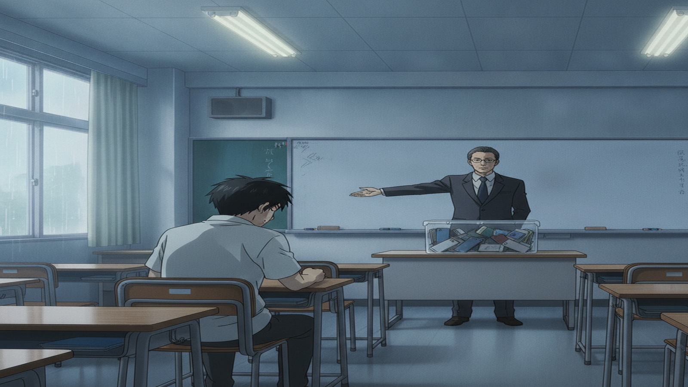
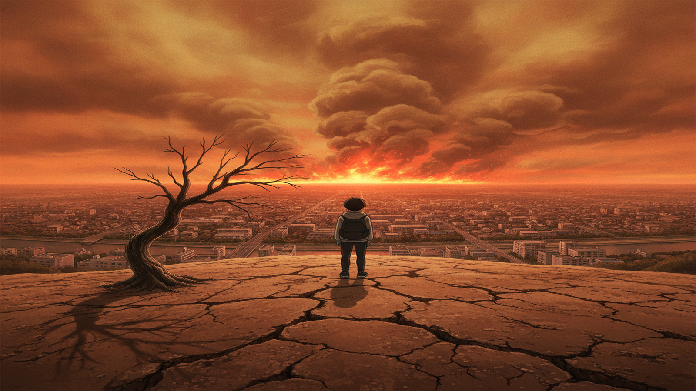
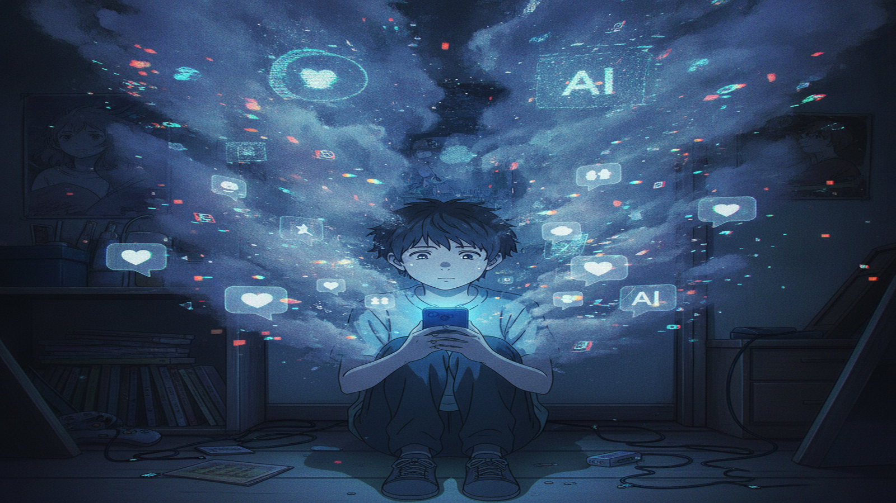
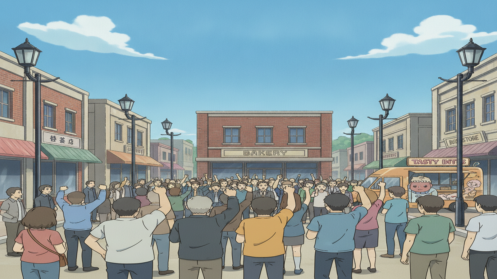
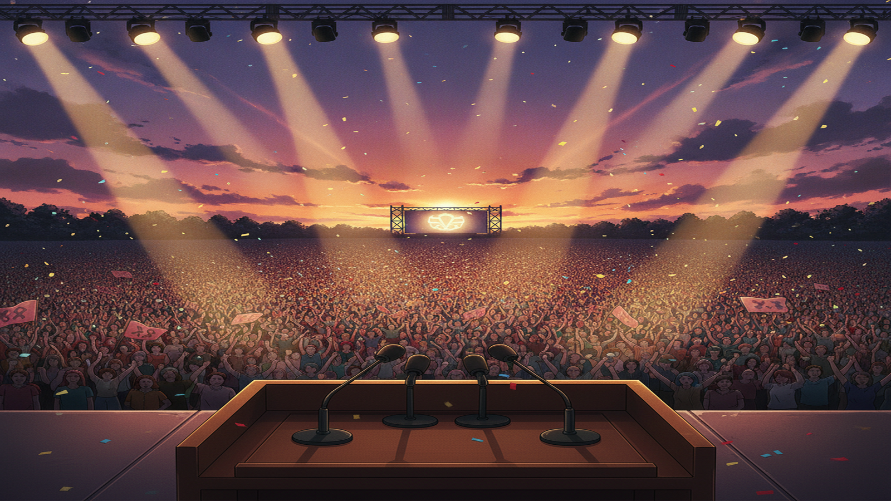

They decide your school, your phone, your future — so why do they never ask you?
The planet's running out of time — so why does no one in charge act like it?
Who decides what AI and the feed do to your whole generation?
No one will answer. So you stop asking — and you run.
One voice becomes a thousand.
Win — and you're the one who answers.
The whole country is listening — to you.
The whole country is listening — to you.
▼ skip